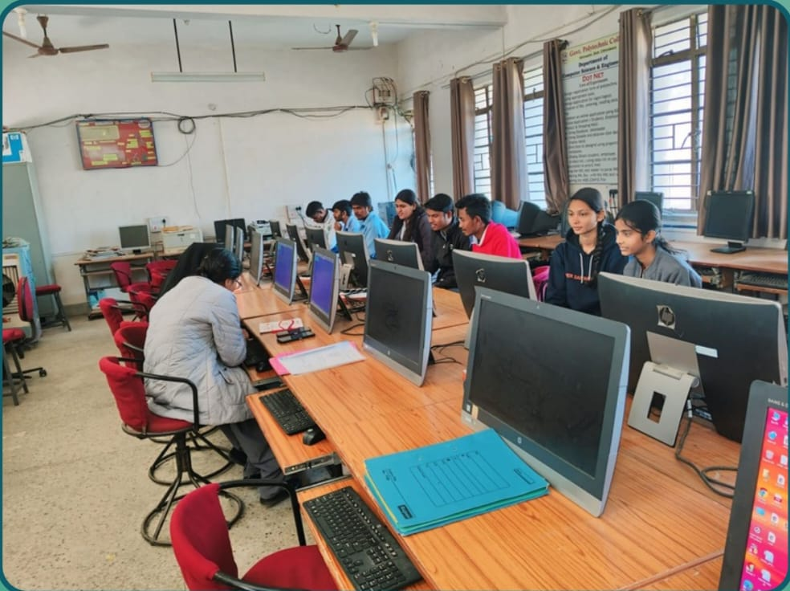
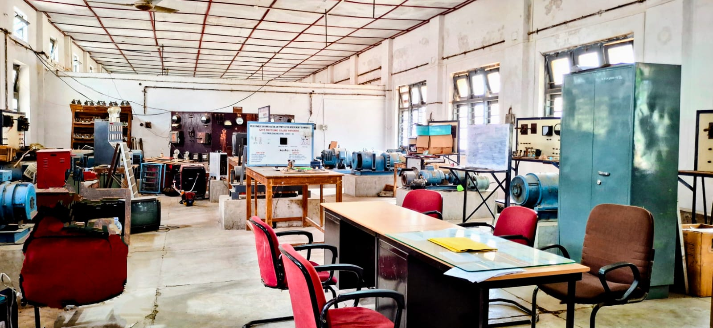
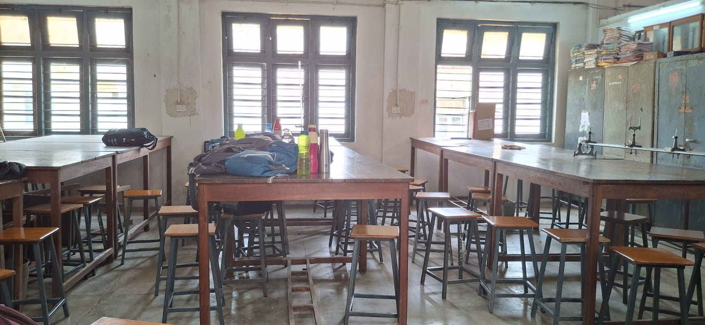
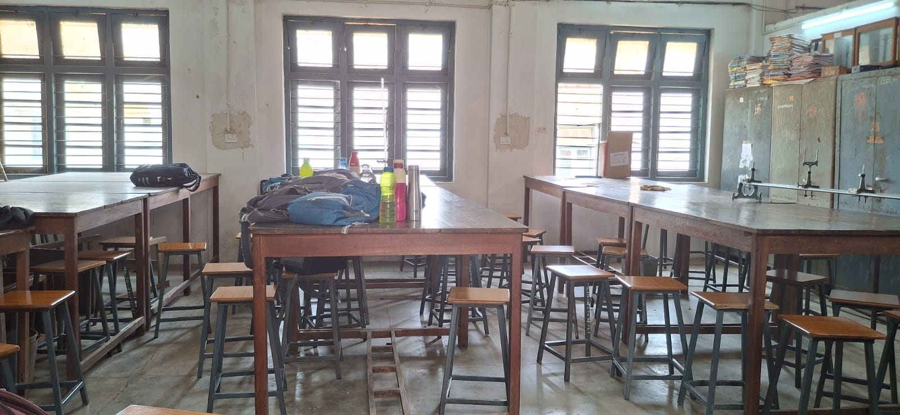

Apply Now
Admission Information:
Eligibility Criteria -
Students must have passed Class 10th.
Duration - 3 Years, 6 Semesters
ITI Students take admissions direct in 2nd year.
Duration - 2 Years, 4 Semesters
Admission Process -
- Admissions are done based on class 10th Marks.
- Merit list is published by the Directorate of Technical Education.
- 1st and 2 nd round of counseling and seat allotment are done online.
- 3rd round of counseling (CLC Round) is done in College.
- Final admission is confirmed after document verification.
- ITI Students take admissions direct in 2nd year by Lateral Entry.
 

Important Dates (Tentative) -
Online Registration - June 2025
Correction Facility - July 2025
Choice Filling - July 2 to 21,2025
Editing Choices - July 2025
Release of Common Merit List - July 2025
Print of Allotment letter and reporting at offered institute - July 2025
Round 2 of Admission
Online Registration - July 2025
Correction Facility - August 2025
Choice Filling - July 2025
Editing Choices - August 2025
Release of Common Merit List - August 2025
Availability of Allotment letter and reporting at offered institute - August 2025
CLC Round of Admission
Online Registration - August 2025
Reporting of Institutes for Admission - August 2025
Online Registration - After CLC vacant seat August 2025
Reporting to the institues - August 2025
Required Documents -
- 10th Marksheet
- Registration Form
- Domicile Certificate
- Passport Size Photographs
- Category Certificate (if applicable)